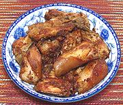

|
Pig Tail AppetizerChina - | ||||
| Serves: Effort: Sched: DoAhead: |
4 app *** 1-3/4 hrs Yes |
This sort of rude and messy appetizer will be enjoyed by Real Men, along with plenty of beer and discussion of the fall of the Mayan Empire or the impact of quantum physics on daily life. Serve with dips (see below). | |||
|
2 ------ 5 3 1 1 ------ 2 3/4 3 1 1/2 1 1/2 |
# --- oz oz t T --- cl in T T t t t |
Pig Tails (1) -- Broth Onion Celery 5 Spice powder (2) Rice Wine (3) ------ Garlic Ginger root Oil Rice Wine (3) Cumin Seed Chili Powder (4) Salt |
Prep - (1-1/3 hr - 15 min work)
|
com_pigtail1 110903 inet - www.clovegarden.com
©Andrew Grygus - agryg@aaxnet.com - Linking to and
non-commercial use of this page is permitted.